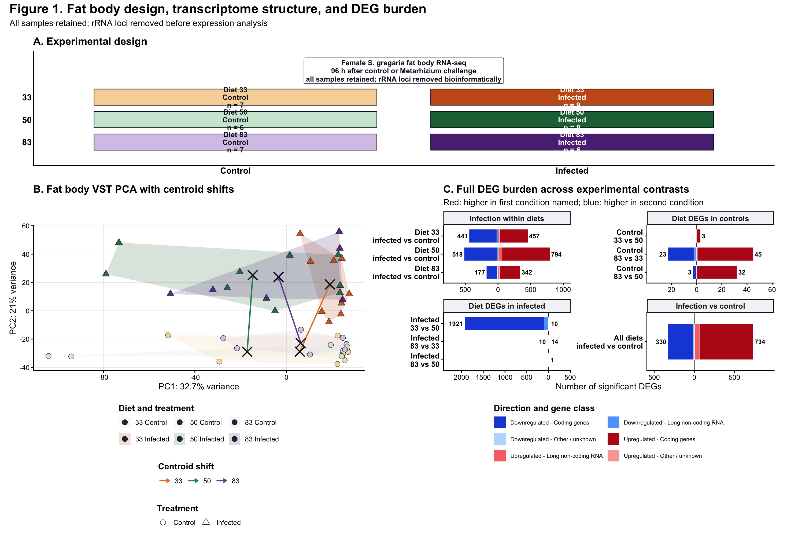
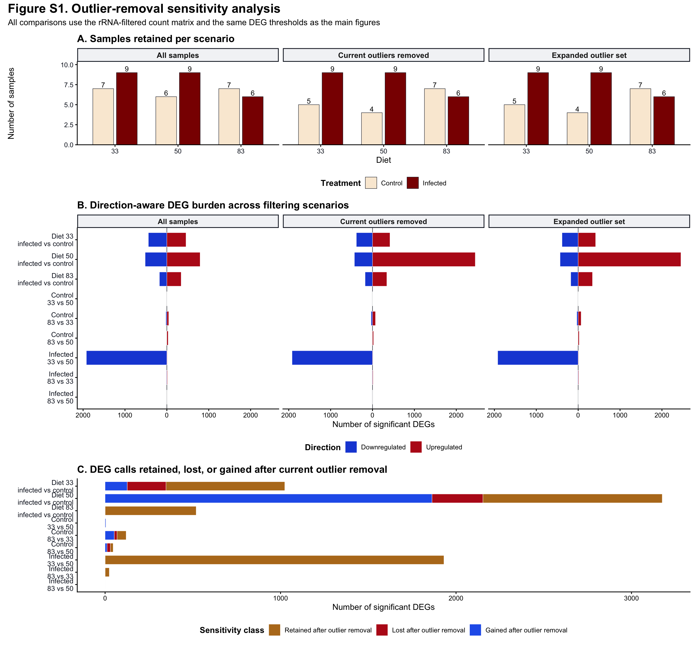
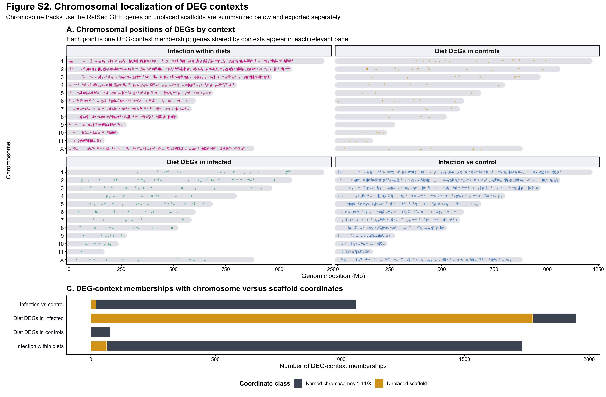

Publication figure exports
Emily Baker and Maeva A. Techer
2026-07-24
Last updated: 2026-07-24
Checks: 6 1
Knit directory:
gregaria-diet-infection-interaction/
This reproducible R Markdown analysis was created with workflowr (version 1.7.2). The Checks tab describes the reproducibility checks that were applied when the results were created. The Past versions tab lists the development history.
The R Markdown file has unstaged changes. To know which version of
the R Markdown file created these results, you’ll want to first commit
it to the Git repo. If you’re still working on the analysis, you can
ignore this warning. When you’re finished, you can run
wflow_publish to commit the R Markdown file and build the
HTML.
Great job! The global environment was empty. Objects defined in the global environment can affect the analysis in your R Markdown file in unknown ways. For reproduciblity it’s best to always run the code in an empty environment.
The command set.seed(20260427) was run prior to running
the code in the R Markdown file. Setting a seed ensures that any results
that rely on randomness, e.g. subsampling or permutations, are
reproducible.
Great job! Recording the operating system, R version, and package versions is critical for reproducibility.
Nice! There were no cached chunks for this analysis, so you can be confident that you successfully produced the results during this run.
Great job! Using relative paths to the files within your workflowr project makes it easier to run your code on other machines.
Great! You are using Git for version control. Tracking code development and connecting the code version to the results is critical for reproducibility.
The results in this page were generated with repository version 1b24ec2. See the Past versions tab to see a history of the changes made to the R Markdown and HTML files.
Note that you need to be careful to ensure that all relevant files for
the analysis have been committed to Git prior to generating the results
(you can use wflow_publish or
wflow_git_commit). workflowr only checks the R Markdown
file, but you know if there are other scripts or data files that it
depends on. Below is the status of the Git repository when the results
were generated:
Ignored files:
Ignored: analysis/output/
Ignored: code/R_timecourse_reference/
Ignored: data/raw_read_counts/DESeq2_output/overlap_DEGs/
Ignored: data/reference/
Ignored: output/rmd_runs/all-deg-catalogue_20260723-164715/
Ignored: output/rmd_runs/all-samples-deseq2-interaction-model_20260715-130121/
Ignored: output/rmd_runs/all-samples-diet-pairwise-deg_All_20260715-130143/
Ignored: output/rmd_runs/all-samples-infection-within-diet-deg_20260722-235632/
Ignored: output/rmd_runs/circled-cluster-enrichment_20260724-004440/
Ignored: output/rmd_runs/count-qc-exploration_20260715-130115/
Ignored: output/rmd_runs/deg-logical-set-construction_20260722-230917/
Ignored: output/rmd_runs/deg-overlap-prioritization_20260715-131731/
Ignored: output/rmd_runs/deg-sample-filter-scenarios_20260722-230637/
Ignored: output/rmd_runs/deseq2-interaction-model_20260715-131611/
Ignored: output/rmd_runs/diet-pairwise-deg_All_20260715-131631/
Ignored: output/rmd_runs/enrichment-term-gene-index_20260722-180842/
Ignored: output/rmd_runs/go-term-enrichment_20260715-160045/
Ignored: output/rmd_runs/infection-within-diet-deg_20260715-131650/
Ignored: output/rmd_runs/outlier-expression-signatures_20260722-180805/
Ignored: output/rmd_runs/outlier-sensitivity_20260715-131934/
Ignored: output/rmd_runs/outliers-load-enrichment_20260715-131837/
Ignored: output/rmd_runs/outliers-removed-deseq2-interaction-model_20260715-130246/
Ignored: output/rmd_runs/outliers-removed-diet-pairwise-deg_All_20260715-130302/
Ignored: output/rmd_runs/outliers-removed-infection-within-diet-deg_20260723-001457/
Ignored: output/rmd_runs/phase-signature-overlap-no-outliers_20260723-001557/
Ignored: output/rmd_runs/phase-signature-overlap_20260722-235730/
Ignored: output/rmd_runs/physiology-candidate-genes_20260715-130650/
Ignored: output/rmd_runs/presentation-labeled-infection-deg-pca_20260724-020436/
Ignored: output/rmd_runs/publication-figures_20260724-020451/
Ignored: output/rmd_runs/study-design-data_20260715-130107/
Ignored: output/rmd_runs/unplaced-scaffold-origin-workflow_20260724-024903/
Ignored: output/rmd_runs/workflow-reproducibility_20260715-130109/
Ignored: scripts/.RData
Ignored: scripts/.Rhistory
Untracked files:
Untracked: analysis/23-outlier-expression-signatures.Rmd
Untracked: analysis/24-all-deg-catalogue.Rmd
Untracked: analysis/25-enrichment-term-gene-index.Rmd
Untracked: analysis/26-circled-cluster-enrichment.Rmd
Untracked: analysis/27-fatbody-wgcna-diet-infection.Rmd
Untracked: scripts/make_labeled_infection_deg_pca.R
Untracked: scripts/make_unplaced_scaffold_origin_workflow.R
Unstaged changes:
Deleted: .DS_Store
Deleted: analysis/.DS_Store
Modified: analysis/08-publication-figures.Rmd
Modified: analysis/12-deg-sample-filter-scenarios.Rmd
Modified: analysis/16-all-samples-infection-within-diet-deg.Rmd
Modified: analysis/19-outliers-removed-infection-within-diet-deg.Rmd
Modified: analysis/20-phase-signature-overlap.Rmd
Modified: analysis/21-phase-signature-overlap-no-outliers.Rmd
Modified: analysis/_site.yml
Modified: analysis/index.Rmd
Deleted: data/.DS_Store
Deleted: data/GO_Annotations/.DS_Store
Deleted: data/GO_Annotations/DesertLocustR/.DS_Store
Deleted: data/excluded_loci/.DS_Store
Deleted: output/.DS_Store
Deleted: output/rmd_runs/.DS_Store
Note that any generated files, e.g. HTML, png, CSS, etc., are not included in this status report because it is ok for generated content to have uncommitted changes.
These are the previous versions of the repository in which changes were
made to the R Markdown
(analysis/08-publication-figures.Rmd) and HTML
(docs/08-publication-figures.html) files. If you’ve
configured a remote Git repository (see ?wflow_git_remote),
click on the hyperlinks in the table below to view the files as they
were in that past version.
| File | Version | Author | Date | Message |
|---|---|---|---|---|
| html | 1b24ec2 | Maeva TECHER | 2026-07-16 | adding phase related changes |
| html | bceb79b | Maeva TECHER | 2026-07-04 | update outliers removal |
| html | fb64139 | Maeva TECHER | 2026-07-03 | fixed the repo broken link |
| html | 4de8698 | Maeva TECHER | 2026-07-03 | update html |
| Rmd | 4ef2181 | Maeva TECHER | 2026-07-03 | Upgrading analysis and figures DEGs |
| html | 4ef2181 | Maeva TECHER | 2026-07-03 | Upgrading analysis and figures DEGs |
Purpose
This page assembles manuscript-facing panels from the all-samples retained analysis. It does not rerun the raw read-processing pipeline. It rebuilds plots from the rRNA-filtered count matrix, metadata, GFF biotypes, and the current all-samples DESeq2 result table.
Every knit writes to a new folder under output/rmd_runs,
so previous figure drafts remain available for comparison.
Setup
knitr::opts_chunk$set(message = FALSE, warning = FALSE)
required <- c("DESeq2", "SummarizedExperiment", "dplyr", "tidyr", "stringr",
"ggplot2", "ggrepel", "patchwork", "scales",
"ggVennDiagram", "png", "grid")
missing <- required[!vapply(required, requireNamespace, logical(1), quietly = TRUE)]
if (length(missing) > 0) {
stop("Install required packages before knitting: ", paste(missing, collapse = ", "))
}
library(ggplot2)
library(patchwork)
project_dir <- normalizePath(".", mustWork = TRUE)
run_stamp <- format(Sys.time(), "%Y%m%d-%H%M%S")
out_dir <- file.path(project_dir, "output", "rmd_runs",
paste(params$output_tag, run_stamp, sep = "_"))
dir.create(out_dir, recursive = TRUE, showWarnings = FALSE)
results_root <- file.path(project_dir, params$latest_results_root)
metadata_file <- file.path(project_dir, params$metadata_file)
counts_file <- file.path(project_dir, params$counts_file)
gff_file <- file.path(project_dir, params$gff_file)
eggnog_file <- file.path(project_dir, params$eggnog_file)
diet_colors <- c("33" = "#E6862E", "50" = "#2F8F5B", "83" = "#7B4FA3")
treatment_colors <- c("Control" = "#FAEBD7", "Infected" = "#8B0000")
condition_colors <- c(
"33 Control" = "#F7D6A6",
"33 Infected" = "#C75C1B",
"50 Control" = "#CDE8D5",
"50 Infected" = "#1F6F43",
"83 Control" = "#D8C7E8",
"83 Infected" = "#5B2E83"
)
direction_biotype_colors <- c(
"Upregulated - Coding genes" = "#B91C1C",
"Upregulated - Long non-coding RNA" = "#F87171",
"Upregulated - Other / unknown" = "#FCA5A5",
"Downregulated - Coding genes" = "#1D4ED8",
"Downregulated - Long non-coding RNA" = "#60A5FA",
"Downregulated - Other / unknown" = "#BFDBFE"
)
physiology_theme_colors <- c(
"Phase-related changes" = "#C51B7D",
"Antimicrobial peptides" = "#D7191C",
"Immune-related" = "#F58220",
"Glycogen synthesis / storage" = "#FFD92F",
"Lipid synthesis / metabolism" = "#1B9E77",
"Protein synthesis / storage" = "#377EB8",
"Detoxification / stress" = "#984EA3",
"Other / unannotated genes" = "#BDBDBD"
)
theme_pub <- function(base_size = 12) {
ggplot2::theme_classic(base_size = base_size) +
ggplot2::theme(
plot.title = ggplot2::element_text(face = "bold"),
strip.background = ggplot2::element_rect(fill = "#F3F4F6",
color = "#111827"),
strip.text = ggplot2::element_text(face = "bold"),
legend.position = "bottom",
legend.title = ggplot2::element_text(face = "bold")
)
}Helper functions
latest_dir <- function(pattern) {
dirs <- list.dirs(results_root, recursive = FALSE, full.names = TRUE)
dirs <- dirs[grepl(pattern, basename(dirs))]
if (length(dirs) == 0) return(NA_character_)
dirs[which.max(file.info(dirs)$mtime)]
}
save_png_svg <- function(plot, file_base, width, height, dpi = 300) {
png_path <- file.path(out_dir, paste0(file_base, ".png"))
svg_path <- file.path(out_dir, paste0(file_base, ".svg"))
ggplot2::ggsave(png_path, plot, width = width, height = height,
dpi = dpi, limitsize = FALSE)
grDevices::svg(svg_path, width = width, height = height, onefile = FALSE)
on.exit(grDevices::dev.off(), add = TRUE)
print(plot)
invisible(c(png = png_path, svg = svg_path))
}
parse_gff_gene_annotation <- function(path) {
gff <- read.delim(path, comment.char = "#", header = FALSE, sep = "\t",
quote = "", stringsAsFactors = FALSE)
names(gff)[1:9] <- c("seqid", "source", "type", "start", "end", "score",
"strand", "phase", "attributes")
gff |>
dplyr::filter(type == "gene") |>
dplyr::transmute(
gene_id = dplyr::coalesce(
stringr::str_match(attributes, "gene=([^;]+)")[, 2],
stringr::str_match(attributes, "Name=([^;]+)")[, 2]
),
Description = stringr::str_match(attributes, "description=([^;]+)")[, 2],
gene_biotype = stringr::str_match(attributes, "gene_biotype=([^;]+)")[, 2]
) |>
dplyr::filter(!is.na(gene_id)) |>
dplyr::mutate(
Description = dplyr::if_else(
is.na(Description) | Description == "",
"no GFF description",
utils::URLdecode(Description)
),
gene_biotype = dplyr::coalesce(gene_biotype, "unknown")
) |>
dplyr::distinct(gene_id, .keep_all = TRUE)
}
parse_gff_gene_coordinates <- function(path) {
gff <- read.delim(path, comment.char = "#", header = FALSE, sep = "\t",
quote = "", stringsAsFactors = FALSE)
names(gff)[1:9] <- c("seqid", "source", "type", "start", "end", "score",
"strand", "phase", "attributes")
sequence_regions <- gff |>
dplyr::filter(type == "region") |>
dplyr::transmute(
seqid,
seq_start = start,
seq_end = end,
chromosome = stringr::str_match(attributes, "chromosome=([^;]+)")[, 2],
region_name = stringr::str_match(attributes, "Name=([^;]+)")[, 2],
genome = stringr::str_match(attributes, "genome=([^;]+)")[, 2]
) |>
dplyr::mutate(
chromosome = dplyr::coalesce(chromosome, region_name, seqid),
chromosome = utils::URLdecode(chromosome),
chromosome_class = dplyr::if_else(
chromosome %in% c(as.character(1:11), "X"),
"Named chromosome",
"Unplaced scaffold"
)
) |>
dplyr::distinct(seqid, .keep_all = TRUE)
gene_ranges <- gff |>
dplyr::filter(type == "gene") |>
dplyr::transmute(
seqid,
gene_id = dplyr::coalesce(
stringr::str_match(attributes, "gene=([^;]+)")[, 2],
stringr::str_match(attributes, "Name=([^;]+)")[, 2]
),
start,
end,
midpoint = (start + end) / 2,
strand
) |>
dplyr::filter(!is.na(gene_id)) |>
dplyr::distinct(gene_id, .keep_all = TRUE) |>
dplyr::left_join(sequence_regions, by = "seqid")
list(gene_ranges = gene_ranges, sequence_regions = sequence_regions)
}
first_nonempty <- function(x, fallback = "") {
x <- x[!is.na(x) & x != "" & x != "-"]
if (length(x) == 0) fallback else x[1]
}
read_emapper <- function(path) {
cols <- c(
"query", "seed_ortholog", "evalue", "score", "eggNOG_OGs",
"max_annot_lvl", "COG_category", "eggNOG_Description",
"eggNOG_name", "GOs", "EC", "KEGG_ko", "KEGG_Pathway",
"KEGG_Module", "KEGG_Reaction", "KEGG_rclass", "BRITE",
"KEGG_TC", "CAZy", "BiGG_Reaction", "PFAMs"
)
tab <- read.delim(path, comment.char = "#", header = FALSE, sep = "\t",
quote = "", fill = TRUE)
names(tab) <- cols[seq_len(ncol(tab))]
tab |>
dplyr::mutate(protein_id = stringr::str_extract(query, "XP_[0-9]+[.][0-9]+"))
}
parse_cds_gene_bridge <- function(path) {
gff <- read.delim(path, comment.char = "#", header = FALSE, sep = "\t",
quote = "", stringsAsFactors = FALSE)
names(gff)[1:9] <- c("seqid", "source", "type", "start", "end", "score",
"strand", "phase", "attributes")
gff |>
dplyr::filter(type == "CDS") |>
dplyr::transmute(
protein_id = stringr::str_match(attributes, "protein_id=([^;]+)")[, 2],
gene_id = stringr::str_match(attributes, "gene=([^;]+)")[, 2]
) |>
dplyr::filter(!is.na(protein_id), !is.na(gene_id)) |>
dplyr::distinct()
}
build_gene_annotation <- function(gff_path, eggnog_path) {
gff_annotation <- parse_gff_gene_annotation(gff_path)
eggnog_annotation <- read_emapper(eggnog_path) |>
dplyr::left_join(parse_cds_gene_bridge(gff_path), by = "protein_id") |>
dplyr::filter(!is.na(gene_id)) |>
dplyr::group_by(gene_id) |>
dplyr::summarise(
eggNOG_Description = first_nonempty(eggNOG_Description),
eggNOG_name = first_nonempty(eggNOG_name),
GOs = first_nonempty(GOs),
KEGG_ko = first_nonempty(KEGG_ko),
KEGG_Pathway = first_nonempty(KEGG_Pathway),
PFAMs = first_nonempty(PFAMs),
.groups = "drop"
)
gff_annotation |>
dplyr::full_join(eggnog_annotation, by = "gene_id") |>
dplyr::mutate(
Description = dplyr::coalesce(Description, "no GFF description"),
gene_biotype = dplyr::coalesce(gene_biotype, "unknown"),
annotation_text = stringr::str_squish(paste(
Description, eggNOG_Description, eggNOG_name, PFAMs,
KEGG_Pathway, sep = " | "
))
)
}
classify_physiology_theme <- function(annotation_text) {
text <- stringr::str_to_lower(dplyr::coalesce(annotation_text, ""))
dplyr::case_when(
stringr::str_detect(
text,
"antimicrobial|defensin|attacin|cecropin|diptericin|gloverin|metchnikowin|thaumatin|termicin|lysozyme"
) ~ "Antimicrobial peptides",
stringr::str_detect(
text,
"toll|imd|relish|myd88|cactus|dorsal|nf-kappa|nf kappa|jak|stat"
) ~ "Immune-related",
stringr::str_detect(
text,
"immune|peptidoglycan|pgrp|gram-negative|gram negative|beta-1,3-glucan|glucan binding|phenoloxidase|prophenoloxidase|melanization|lectin|hemocyanin|complement|serpin"
) ~ "Immune-related",
stringr::str_detect(
text,
"glycogen|glycogenin|branching enzyme|starch"
) ~ "Glycogen synthesis / storage",
stringr::str_detect(
text,
"lipid|fatty acid|fatty-acid|acyl-coa|acyl coa|acetyl-coa carboxylase|elongase|desaturase|glycerolipid|phospholipid|triacylglycerol|diacylglycerol|sterol|lipase"
) ~ "Lipid synthesis / metabolism",
stringr::str_detect(
text,
"protein synthesis|translation|ribosom|elongation factor|initiation factor|aminoacyl|trna synthetase|vitellogenin|hexamerin|arylphorin|storage protein"
) ~ "Protein synthesis / storage",
stringr::str_detect(
text,
"detox|cytochrome p450|\\bcyp[0-9a-z]|glutathione|gst|carboxylesterase|esterase|udp-glucuronosyltransferase|\\bugt\\b|abc transporter|oxidoreductase|peroxidase|catalase|superoxide|heat shock|stress"
) ~ "Detoxification / stress",
stringr::str_detect(text, "no gff description|^\\s*$") ~
"Other / unannotated genes",
TRUE ~ "Other / unannotated genes"
)
}
classify_gene_class <- function(gene_biotype) {
dplyr::case_when(
gene_biotype == "protein_coding" ~ "Coding genes",
gene_biotype == "lncRNA" ~ "Long non-coding RNA",
TRUE ~ "Other / unknown"
)
}
make_condition_label <- function(comparison_type, numerator, denominator, diet,
side = c("numerator", "denominator")) {
side <- match.arg(side)
value <- if (side == "numerator") numerator else denominator
dplyr::case_when(
comparison_type == "Infection within diet" ~ paste(value, "diet", diet),
grepl("control", comparison_type, ignore.case = TRUE) ~
paste("Control diet", value),
grepl("infected", comparison_type, ignore.case = TRUE) ~
paste("Infected diet", value),
TRUE ~ value
)
}
make_condition_hull <- function(df) {
if (nrow(df) < 3) return(df[0, ])
df[chull(df$PC1, df$PC2), ]
}
copy_publication_asset <- function(source, file_base) {
if (!file.exists(source)) return(NA_character_)
target <- file.path(out_dir, paste0(file_base, ".", tools::file_ext(source)))
file.copy(source, target, overwrite = TRUE)
target
}Input data
scenario_dir <- latest_dir("^deg-sample-filter-scenarios_")
scenario_results_file <- file.path(scenario_dir, "all_deseq2_results.csv")
scenario_sample_counts_file <- file.path(scenario_dir,
"sample_counts_by_scenario.csv")
model_dir <- latest_dir("^all-samples-deseq2-interaction-model_")
model_coefficients_file <- file.path(model_dir, "all_model_coefficients.csv")
logical_dir <- latest_dir("^deg-logical-set-construction_")
head_phase_file <- file.path(logical_dir, "step3_head_phase_degs.csv")
thorax_phase_file <- file.path(logical_dir, "step4_thorax_phase_degs.csv")
circled_cluster_dir <- latest_dir("^circled-cluster-enrichment_")
figure3_composite_source <- file.path(
circled_cluster_dir,
"expression_cluster_gene_level_GO_KEGG_lollipop.png"
)
figure3_reference_source <- file.path(
circled_cluster_dir,
"expression_cluster_gene_level_GO_KEGG_lollipop_with_references.png"
)
inputs <- data.frame(
input = c("metadata", "rRNA-filtered counts", "GFF annotation",
"eggNOG annotation", "all-samples DESeq2 scenario table",
"sample-filter scenario counts",
"all-samples model coefficients", "Head phase DEGs",
"Thorax phase DEGs", "Figure 3 composite source"),
path = c(metadata_file, counts_file, gff_file, eggnog_file,
scenario_results_file, scenario_sample_counts_file,
model_coefficients_file,
head_phase_file, thorax_phase_file, figure3_composite_source),
present = c(file.exists(metadata_file), file.exists(counts_file),
file.exists(gff_file), file.exists(eggnog_file),
file.exists(scenario_results_file),
file.exists(scenario_sample_counts_file),
file.exists(model_coefficients_file),
file.exists(head_phase_file), file.exists(thorax_phase_file),
file.exists(figure3_composite_source))
)
knitr::kable(inputs, caption = "Inputs used to assemble publication figures")| input | path | present |
|---|---|---|
| metadata | /Users/maevatecher/Documents/GitHub/gregaria-diet-infection-interaction/data/metadata/mehreen_metadata_fixed.txt | TRUE |
| rRNA-filtered counts | /Users/maevatecher/Documents/GitHub/gregaria-diet-infection-interaction/data/raw_read_counts/master_counts_no_rRNA.csv | TRUE |
| GFF annotation | /Users/maevatecher/Documents/GitHub/gregaria-diet-infection-interaction/data/reference/GCF_023897955.1_iqSchGreg1.2_genomic.gff | TRUE |
| eggNOG annotation | /Users/maevatecher/Documents/GitHub/gregaria-diet-infection-interaction/data/GO_Annotations/GCF_023897955.1_iqSchGreg1.2_Arthopoda_one2one.emapper.annotations | TRUE |
| all-samples DESeq2 scenario table | /Users/maevatecher/Documents/GitHub/gregaria-diet-infection-interaction/output/rmd_runs/deg-sample-filter-scenarios_20260722-230637/all_deseq2_results.csv | TRUE |
| sample-filter scenario counts | /Users/maevatecher/Documents/GitHub/gregaria-diet-infection-interaction/output/rmd_runs/deg-sample-filter-scenarios_20260722-230637/sample_counts_by_scenario.csv | TRUE |
| all-samples model coefficients | /Users/maevatecher/Documents/GitHub/gregaria-diet-infection-interaction/output/rmd_runs/all-samples-deseq2-interaction-model_20260715-130121/all_model_coefficients.csv | TRUE |
| Head phase DEGs | /Users/maevatecher/Documents/GitHub/gregaria-diet-infection-interaction/output/rmd_runs/deg-logical-set-construction_20260722-230917/step3_head_phase_degs.csv | TRUE |
| Thorax phase DEGs | /Users/maevatecher/Documents/GitHub/gregaria-diet-infection-interaction/output/rmd_runs/deg-logical-set-construction_20260722-230917/step4_thorax_phase_degs.csv | TRUE |
| Figure 3 composite source | /Users/maevatecher/Documents/GitHub/gregaria-diet-infection-interaction/output/rmd_runs/circled-cluster-enrichment_20260724-004440/expression_cluster_gene_level_GO_KEGG_lollipop.png | TRUE |
if (!all(inputs$present)) {
stop("One or more publication figure inputs are missing.")
}Figure 1: design, fat body PCA, and infection DEGs
Figure 1 is a compact visual summary of the fat body experiment and the infection-response contrasts.
- Panel A shows the balanced diet-by-infection design and the number of fat body RNA-seq libraries in each group.
- Panel B shows the VST PCA from all expressed, rRNA-filtered genes. Pale hulls show the spread of each diet-by-treatment group, black crosses mark centroids, and arrows show the shift from control to infected samples within each diet.
- Panel C summarizes the full contrast-level DEG burden across infection within diets, diet differences among controls, diet differences among infected samples, and the global infected-control model term. Red bars mark genes higher in the first condition named in the contrast. Blue bars mark genes higher in the second condition. Lighter red or blue segments mark long non-coding RNAs.
Panel A
metadata <- read.delim(metadata_file, check.names = FALSE)
metadata <- metadata[, !is.na(names(metadata)) & nzchar(names(metadata)),
drop = FALSE]
metadata$label <- as.character(metadata$label)
metadata$Diet <- factor(metadata$Diet, levels = c("33", "50", "83"))
metadata$Treatment <- factor(metadata$Treatment,
levels = c("Control", "Infected"))
design_counts <- metadata |>
dplyr::count(Diet, Treatment, name = "n_samples") |>
tidyr::complete(Diet, Treatment, fill = list(n_samples = 0)) |>
dplyr::mutate(
Condition = paste(Diet, Treatment),
label = paste0("Diet ", Diet, "\n", Treatment, "\nn = ", n_samples),
text_color = dplyr::if_else(Treatment == "Infected", "white", "#111827")
)
p_design <- ggplot2::ggplot(
design_counts,
ggplot2::aes(x = Treatment, y = Diet, fill = Condition)
) +
ggplot2::geom_tile(width = 0.84, height = 0.72, color = "#111827",
linewidth = 0.45) +
ggplot2::geom_text(
ggplot2::aes(label = label, color = text_color),
lineheight = 0.88,
size = 3.6,
fontface = "bold"
) +
ggplot2::annotate(
"label",
x = 1.5, y = 4.18,
label = paste(
"Female S. gregaria fat body RNA-seq",
"96 h after control or Metarhizium challenge",
"all samples retained; rRNA loci removed bioinformatically",
sep = "\n"
),
label.size = 0.25,
fill = "white",
color = "#111827",
size = 3.5,
fontface = "bold",
lineheight = 0.96
) +
ggplot2::scale_fill_manual(values = condition_colors, drop = FALSE) +
ggplot2::scale_color_identity() +
ggplot2::scale_y_discrete(limits = rev(levels(metadata$Diet))) +
ggplot2::coord_cartesian(clip = "off", ylim = c(0.55, 4.45)) +
theme_pub(base_size = 12) +
ggplot2::theme(
axis.title = ggplot2::element_blank(),
axis.text.x = ggplot2::element_text(face = "bold", size = 12),
axis.text.y = ggplot2::element_text(face = "bold", size = 12),
axis.ticks = ggplot2::element_blank(),
legend.position = "none",
plot.margin = ggplot2::margin(8, 8, 8, 8)
) +
ggplot2::labs(title = "A. Experimental design")
save_png_svg(p_design, "figure1_panel_A_experimental_design",
width = 7.2, height = 4.6)
p_design
Panel B
counts_raw <- read.csv(counts_file, check.names = FALSE)
counts <- as.matrix(counts_raw[, -1, drop = FALSE])
rownames(counts) <- counts_raw[[1]]
storage.mode(counts) <- "integer"
count_labels_all <- sub("_MERGE$", "", sub("^mehreen_", "", colnames(counts)))
keep_samples <- count_labels_all %in% metadata$label
counts <- counts[, keep_samples, drop = FALSE]
count_labels <- count_labels_all[keep_samples]
metadata_ordered <- metadata[match(count_labels, metadata$label), ]
stopifnot(identical(metadata_ordered$label, count_labels))
rownames(metadata_ordered) <- metadata_ordered$label
colnames(counts) <- count_labels
keep_vst <- rowSums(counts) >= params$min_total_count
dds_vst <- DESeq2::DESeqDataSetFromMatrix(
countData = counts[keep_vst, , drop = FALSE],
colData = metadata_ordered,
design = ~ Diet + Treatment
)
vsd <- DESeq2::vst(dds_vst, blind = TRUE)
vst_mat <- SummarizedExperiment::assay(vsd)
nonzero_variance <- apply(vst_mat, 1, var) > 0
pca <- prcomp(t(vst_mat[nonzero_variance, , drop = FALSE]), scale. = FALSE)
percent_var <- round(100 * (pca$sdev^2 / sum(pca$sdev^2)), 1)
pca_scores <- data.frame(
label = rownames(pca$x),
PC1 = pca$x[, "PC1"],
PC2 = pca$x[, "PC2"],
Diet = metadata_ordered$Diet,
Treatment = metadata_ordered$Treatment,
check.names = FALSE
)
pca_scores$Condition <- factor(
paste(pca_scores$Diet, pca_scores$Treatment),
levels = names(condition_colors)
)
pca_centroids <- aggregate(cbind(PC1, PC2) ~ Diet + Treatment + Condition,
pca_scores, mean)
pca_hulls <- do.call(rbind, lapply(split(pca_scores, pca_scores$Condition),
make_condition_hull))
centroid_shift <- merge(
pca_centroids[pca_centroids$Treatment == "Control",
c("Diet", "PC1", "PC2")],
pca_centroids[pca_centroids$Treatment == "Infected",
c("Diet", "PC1", "PC2")],
by = "Diet",
suffixes = c("_control", "_infected")
)
p_pca <- ggplot2::ggplot() +
ggplot2::geom_polygon(
data = pca_hulls,
ggplot2::aes(x = PC1, y = PC2, fill = Condition, group = Condition),
alpha = 0.18,
color = NA
) +
ggplot2::geom_point(
data = pca_scores,
ggplot2::aes(x = PC1, y = PC2, fill = Condition, shape = Treatment),
color = "#111827",
size = 3.3,
stroke = 0.35,
alpha = 0.92
) +
ggplot2::geom_segment(
data = centroid_shift,
ggplot2::aes(x = PC1_control, y = PC2_control,
xend = PC1_infected, yend = PC2_infected,
color = Diet),
linewidth = 0.9,
arrow = grid::arrow(length = grid::unit(0.18, "cm"))
) +
ggplot2::geom_point(
data = pca_centroids,
ggplot2::aes(x = PC1, y = PC2),
shape = 4,
color = "#111827",
stroke = 1.25,
size = 5.2
) +
ggplot2::scale_fill_manual(values = condition_colors, drop = FALSE) +
ggplot2::scale_color_manual(values = diet_colors, drop = FALSE) +
ggplot2::scale_shape_manual(values = c("Control" = 21, "Infected" = 24)) +
theme_pub(base_size = 12) +
ggplot2::theme(
legend.position = "bottom",
legend.box = "vertical",
panel.grid.major = ggplot2::element_line(color = "#E5E7EB",
linewidth = 0.25)
) +
ggplot2::guides(
fill = ggplot2::guide_legend(nrow = 2, title.position = "top"),
color = ggplot2::guide_legend(nrow = 1, title.position = "top"),
shape = ggplot2::guide_legend(nrow = 1, title.position = "top")
) +
ggplot2::labs(
title = "B. Fat body VST PCA with centroid shifts",
x = paste0("PC1: ", percent_var[1], "% variance"),
y = paste0("PC2: ", percent_var[2], "% variance"),
fill = "Diet and treatment",
color = "Centroid shift",
shape = "Treatment"
)
write.csv(pca_scores, file.path(out_dir, "figure1_panel_B_pca_scores.csv"),
row.names = FALSE)
write.csv(pca_centroids, file.path(out_dir, "figure1_panel_B_pca_centroids.csv"),
row.names = FALSE)
write.csv(centroid_shift, file.path(out_dir,
"figure1_panel_B_pca_centroid_shifts.csv"),
row.names = FALSE)
save_png_svg(p_pca, "figure1_panel_B_vst_pca_centroids",
width = 7.2, height = 5.2)
p_pca
Panel C
gene_biotypes <- parse_gff_gene_annotation(gff_file)
scenario_degs_for_barplot <- read.csv(scenario_results_file, check.names = FALSE) |>
dplyr::filter(
scenario == "All samples",
significant,
!is.na(gene_id),
!is.na(padj),
padj < params$alpha,
abs(log2FoldChange) >= params$lfc_threshold
)
model_degs_for_barplot <- read.csv(model_coefficients_file,
check.names = FALSE) |>
dplyr::filter(
coefficient == "Treatment_Infected_vs_Control",
significant,
!is.na(gene_id),
!is.na(padj),
padj < params$alpha,
abs(log2FoldChange) >= params$lfc_threshold
)
deg_raw <- dplyr::bind_rows(
scenario_degs_for_barplot |>
dplyr::transmute(
DEG_context = dplyr::case_when(
comparison_type == "Infection within diet" ~
"Infection within diets",
comparison_type == "Diet contrasts among control" ~
"Diet DEGs in controls",
comparison_type == "Diet contrasts among infected" ~
"Diet DEGs in infected",
TRUE ~ comparison_type
),
comparison_type,
comparison,
numerator,
denominator,
diet = as.character(diet),
gene_id,
log2FoldChange
),
model_degs_for_barplot |>
dplyr::transmute(
DEG_context = "Infection vs control",
comparison_type = "Infection vs control",
comparison = "All diets: infected vs control",
numerator = "Infected",
denominator = "Control",
diet = NA_character_,
gene_id,
log2FoldChange
)
)
context_order <- c(
"Infection within diets",
"Diet DEGs in controls",
"Diet DEGs in infected",
"Infection vs control"
)
contrast_order <- c(
"All diets\ninfected vs control",
"Diet 83\ninfected vs control",
"Diet 50\ninfected vs control",
"Diet 33\ninfected vs control",
"Control\n83 vs 50",
"Control\n83 vs 33",
"Control\n33 vs 50",
"Infected\n83 vs 50",
"Infected\n83 vs 33",
"Infected\n33 vs 50"
)
deg_biotype_counts <- deg_raw |>
dplyr::mutate(
signed_direction = dplyr::if_else(log2FoldChange > 0,
"Upregulated", "Downregulated"),
numerator_condition = make_condition_label(
comparison_type, numerator, denominator, diet, "numerator"
),
denominator_condition = make_condition_label(
comparison_type, numerator, denominator, diet, "denominator"
),
higher_in = dplyr::if_else(log2FoldChange > 0,
numerator_condition, denominator_condition),
contrast_label = dplyr::case_when(
DEG_context == "Infection within diets" ~
paste0("Diet ", diet, "\ninfected vs control"),
DEG_context == "Diet DEGs in controls" ~
paste0("Control\n", numerator, " vs ", denominator),
DEG_context == "Diet DEGs in infected" ~
paste0("Infected\n", numerator, " vs ", denominator),
DEG_context == "Infection vs control" ~
"All diets\ninfected vs control",
TRUE ~ comparison
)
) |>
dplyr::left_join(gene_biotypes, by = "gene_id") |>
dplyr::mutate(
Gene_class = classify_gene_class(gene_biotype),
DEG_context = factor(DEG_context, levels = context_order),
contrast_label = factor(contrast_label, levels = contrast_order),
signed_direction = factor(signed_direction,
levels = c("Downregulated", "Upregulated")),
direction_class = paste(signed_direction, Gene_class, sep = " - ")
) |>
dplyr::distinct(DEG_context, comparison, contrast_label, signed_direction,
gene_id, Gene_class, .keep_all = TRUE) |>
dplyr::count(DEG_context, comparison, contrast_label,
signed_direction, Gene_class,
direction_class, name = "n_DEGs") |>
dplyr::group_by(DEG_context, comparison, contrast_label, signed_direction) |>
tidyr::complete(
Gene_class = c("Coding genes", "Long non-coding RNA", "Other / unknown"),
fill = list(n_DEGs = 0)
) |>
dplyr::ungroup() |>
dplyr::filter(!is.na(DEG_context), !is.na(contrast_label)) |>
dplyr::mutate(
direction_class = paste(signed_direction, Gene_class, sep = " - "),
signed_n = dplyr::if_else(signed_direction == "Upregulated",
n_DEGs, -n_DEGs)
)
deg_total_labels <- deg_biotype_counts |>
dplyr::group_by(DEG_context, comparison, contrast_label, signed_direction) |>
dplyr::summarise(total_DEGs = sum(n_DEGs), .groups = "drop") |>
dplyr::mutate(
signed_total = dplyr::if_else(signed_direction == "Upregulated",
total_DEGs, -total_DEGs)
)
context_max <- deg_total_labels |>
dplyr::group_by(DEG_context) |>
dplyr::summarise(max_total = max(abs(signed_total), 1),
.groups = "drop")
deg_total_labels <- deg_total_labels |>
dplyr::left_join(context_max, by = "DEG_context") |>
dplyr::filter(total_DEGs > 0) |>
dplyr::mutate(
label_x = signed_total + dplyr::if_else(
signed_total > 0,
max_total * 0.025,
-max_total * 0.025
),
hjust = dplyr::if_else(signed_total > 0, 0, 1)
)
p_deg_biotype <- ggplot2::ggplot(
deg_biotype_counts,
ggplot2::aes(x = signed_n, y = contrast_label, fill = direction_class)
) +
ggplot2::geom_vline(xintercept = 0, linewidth = 0.35, color = "#111827") +
ggplot2::geom_col(width = 0.74, color = "white", linewidth = 0.2) +
ggplot2::geom_text(
data = deg_total_labels,
ggplot2::aes(x = label_x, y = contrast_label, label = total_DEGs,
hjust = hjust),
inherit.aes = FALSE,
size = 3.1,
fontface = "bold"
) +
ggplot2::facet_wrap(~ DEG_context, ncol = 2, scales = "free") +
ggplot2::scale_fill_manual(values = direction_biotype_colors, drop = FALSE) +
ggplot2::scale_x_continuous(
labels = abs,
expand = ggplot2::expansion(mult = c(0.22, 0.22))
) +
theme_pub(base_size = 12) +
ggplot2::theme(
axis.title.y = ggplot2::element_blank(),
axis.text.y = ggplot2::element_text(size = 10.5, face = "bold"),
strip.text = ggplot2::element_text(size = 10.5, face = "bold"),
panel.spacing = grid::unit(0.55, "lines"),
legend.position = "bottom",
legend.text = ggplot2::element_text(size = 8),
plot.margin = ggplot2::margin(6, 28, 6, 6)
) +
ggplot2::guides(
fill = ggplot2::guide_legend(nrow = 3, title.position = "top",
byrow = TRUE)
) +
ggplot2::labs(
title = "C. Full DEG burden across experimental contrasts",
subtitle = "Red: higher in first condition named; blue: higher in second condition",
x = "Number of significant DEGs",
fill = "Direction and gene class"
)
write.csv(deg_biotype_counts,
file.path(out_dir, "figure1_panel_C_deg_biotype_counts.csv"),
row.names = FALSE)
write.csv(deg_raw,
file.path(out_dir, "figure1_panel_C_exact_contrast_deg_gene_table.csv"),
row.names = FALSE)
save_png_svg(p_deg_biotype, "figure1_panel_C_deg_biotype_burden",
width = 11.2, height = 8.4)
p_deg_biotype
Composite Figure 1
figure1 <- p_design / (p_pca | p_deg_biotype) +
patchwork::plot_layout(heights = c(0.44, 0.56),
widths = c(1.0, 1.08)) +
patchwork::plot_annotation(
title = "Figure 1. Fat body design, transcriptome structure, and DEG burden",
subtitle = "All samples retained; rRNA loci removed before expression analysis",
theme = ggplot2::theme(
plot.title = ggplot2::element_text(face = "bold", size = 18),
plot.subtitle = ggplot2::element_text(size = 12)
)
)
save_png_svg(figure1, "figure1_design_fatbody_pca_infection_deg",
width = 17.5, height = 12.6)
figure1
Figure 2: DEG-family overlap and candidate composition
Figure 2 asks whether the major DEG families are distinct or reusing the same genes. Panel A is a Venn diagram across four broad DEG contexts: infection within diet, diet differences among controls, diet differences among infected samples, and the global infected-control main effect. Panel B asks whether the infection-within-diet DEGs overlap phase-change DEGs detected in independent head and thorax solitarious-vs-gregarious references. Panel C asks what fraction of each broad DEG family falls into hand-curated physiology categories or the phase-related reference category.
scenario_degs <- read.csv(scenario_results_file, check.names = FALSE) |>
dplyr::filter(
scenario == "All samples",
significant,
!is.na(gene_id),
!is.na(padj),
padj < params$alpha,
abs(log2FoldChange) >= params$lfc_threshold
)
model_degs <- read.csv(model_coefficients_file, check.names = FALSE) |>
dplyr::filter(
coefficient == "Treatment_Infected_vs_Control",
significant,
!is.na(gene_id),
!is.na(padj),
padj < params$alpha,
abs(log2FoldChange) >= params$lfc_threshold
)
broad_deg_sets <- list(
"Infection within diets" = scenario_degs |>
dplyr::filter(comparison_type == "Infection within diet") |>
dplyr::pull(gene_id) |>
unique(),
"Diet DEGs in controls" = scenario_degs |>
dplyr::filter(comparison_type == "Diet contrasts among control") |>
dplyr::pull(gene_id) |>
unique(),
"Diet DEGs in infected" = scenario_degs |>
dplyr::filter(comparison_type == "Diet contrasts among infected") |>
dplyr::pull(gene_id) |>
unique(),
"Infection vs control" = unique(model_degs$gene_id)
)
broad_deg_sets <- broad_deg_sets[lengths(broad_deg_sets) > 0]
all_overlap_genes <- sort(unique(unlist(broad_deg_sets, use.names = FALSE)))
overlap_membership <- data.frame(gene_id = all_overlap_genes)
for (set_name in names(broad_deg_sets)) {
overlap_membership[[set_name]] <- overlap_membership$gene_id %in%
broad_deg_sets[[set_name]]
}
overlap_membership$intersection <- apply(
overlap_membership[names(broad_deg_sets)],
1,
function(x) paste(names(broad_deg_sets)[x], collapse = " + ")
)
write.csv(overlap_membership,
file.path(out_dir, "figure2_deg_family_overlap_membership.csv"),
row.names = FALSE)
overlap_summary <- overlap_membership |>
dplyr::count(intersection, name = "n_genes") |>
dplyr::arrange(dplyr::desc(n_genes), intersection)
write.csv(overlap_summary,
file.path(out_dir, "figure2_deg_family_overlap_summary.csv"),
row.names = FALSE)
head_phase_degs <- read.csv(head_phase_file, check.names = FALSE) |>
dplyr::filter(
significant,
!is.na(gene_id),
!is.na(padj),
padj < params$alpha,
abs(log2FoldChange) >= params$lfc_threshold
)
thorax_phase_degs <- read.csv(thorax_phase_file, check.names = FALSE) |>
dplyr::filter(
significant,
!is.na(gene_id),
!is.na(padj),
padj < params$alpha,
abs(log2FoldChange) >= params$lfc_threshold
)
head_phase_genes <- unique(head_phase_degs$gene_id)
thorax_phase_genes <- unique(thorax_phase_degs$gene_id)
phase_genes <- intersect(head_phase_genes, thorax_phase_genes)
phase_overlap_sets <- list(
"Infection within diets" = broad_deg_sets[["Infection within diets"]],
"Head phase DEGs" = head_phase_genes,
"Thorax phase DEGs" = thorax_phase_genes
)
phase_overlap_genes <- sort(unique(unlist(phase_overlap_sets,
use.names = FALSE)))
phase_overlap_membership <- data.frame(gene_id = phase_overlap_genes)
for (set_name in names(phase_overlap_sets)) {
phase_overlap_membership[[set_name]] <-
phase_overlap_membership$gene_id %in% phase_overlap_sets[[set_name]]
}
phase_overlap_membership$intersection <- apply(
phase_overlap_membership[names(phase_overlap_sets)],
1,
function(x) paste(names(phase_overlap_sets)[x], collapse = " + ")
)
write.csv(phase_overlap_membership,
file.path(out_dir, "figure2_infection_phase_overlap_membership.csv"),
row.names = FALSE)
phase_overlap_summary <- phase_overlap_membership |>
dplyr::count(intersection, name = "n_genes") |>
dplyr::arrange(dplyr::desc(n_genes), intersection)
write.csv(phase_overlap_summary,
file.path(out_dir, "figure2_infection_phase_overlap_summary.csv"),
row.names = FALSE)
broad_deg_plot_sets <- broad_deg_sets
names(broad_deg_plot_sets) <- c(
"Infection\nwithin diet",
"Diet\ncontrols",
"Diet\ninfected",
"Infect.\nvs ctrl"
)
p_venn <- ggVennDiagram::ggVennDiagram(
broad_deg_plot_sets,
label = "count",
label_alpha = 0,
edge_size = 0.75,
set_size = 4.0
) +
ggplot2::scale_fill_gradient(low = "#FFF7D1", high = "#D9A21B") +
ggplot2::theme_void(base_size = 12) +
ggplot2::theme(
legend.position = "none",
plot.title = ggplot2::element_text(face = "bold", size = 16),
plot.subtitle = ggplot2::element_text(size = 11),
plot.background = ggplot2::element_rect(fill = "white", color = NA),
panel.background = ggplot2::element_rect(fill = "white", color = NA),
plot.margin = ggplot2::margin(8, 24, 8, 24)
) +
ggplot2::labs(
title = "A. Venn overlap among DEG contexts",
subtitle = "Each circle is the union of significant genes in that context",
fill = "Genes"
)
save_png_svg(p_venn, "figure2_deg_family_overlap_venn",
width = 9.4, height = 8.2)
phase_overlap_plot_sets <- phase_overlap_sets
names(phase_overlap_plot_sets) <- c(
"Infection\nwithin diets",
"Head phase\nDEGs",
"Thorax phase\nDEGs"
)
p_phase_venn <- ggVennDiagram::ggVennDiagram(
phase_overlap_plot_sets,
label = "count",
label_alpha = 0,
edge_size = 0.75,
set_size = 4.0
) +
ggplot2::scale_fill_gradient(low = "#FFF7D1", high = "#D9A21B") +
ggplot2::theme_void(base_size = 12) +
ggplot2::theme(
legend.position = "none",
plot.title = ggplot2::element_text(face = "bold", size = 16),
plot.subtitle = ggplot2::element_text(size = 11),
plot.background = ggplot2::element_rect(fill = "white", color = NA),
panel.background = ggplot2::element_rect(fill = "white", color = NA),
plot.margin = ggplot2::margin(8, 24, 8, 24)
) +
ggplot2::labs(
title = "B. Infection DEGs overlapping phase-reference DEGs",
subtitle = "Phase references are solitarious-vs-gregarious DEGs in head and thorax",
fill = "Genes"
)
save_png_svg(p_phase_venn, "figure2_infection_phase_overlap_venn",
width = 9.4, height = 8.2)
gene_annotation <- build_gene_annotation(gff_file, eggnog_file)
deg_family_long <- dplyr::bind_rows(lapply(names(broad_deg_sets), function(set_name) {
data.frame(
DEG_family = set_name,
gene_id = broad_deg_sets[[set_name]],
stringsAsFactors = FALSE
)
}))
deg_family_long$DEG_family <- factor(
deg_family_long$DEG_family,
levels = names(broad_deg_sets)
)
candidate_theme_table <- deg_family_long |>
dplyr::left_join(gene_annotation, by = "gene_id") |>
dplyr::mutate(
annotation_text = dplyr::coalesce(annotation_text, ""),
base_physiology_theme = classify_physiology_theme(annotation_text),
phase_related = gene_id %in% phase_genes,
phase_reference_source = dplyr::case_when(
gene_id %in% head_phase_genes & gene_id %in% thorax_phase_genes ~
"Head + thorax phase DEG",
gene_id %in% head_phase_genes ~ "Head phase DEG",
gene_id %in% thorax_phase_genes ~ "Thorax phase DEG",
TRUE ~ "Not phase-related"
),
physiology_theme = dplyr::case_when(
base_physiology_theme != "Other / unannotated genes" ~
base_physiology_theme,
phase_related ~ "Phase-related changes",
TRUE ~ base_physiology_theme
),
physiology_theme = factor(physiology_theme,
levels = names(physiology_theme_colors))
)
write.csv(candidate_theme_table,
file.path(out_dir, "figure2_deg_family_candidate_theme_gene_table.csv"),
row.names = FALSE)
composition_counts <- candidate_theme_table |>
dplyr::distinct(DEG_family, gene_id, physiology_theme) |>
dplyr::count(DEG_family, physiology_theme, name = "n_genes") |>
dplyr::group_by(DEG_family) |>
tidyr::complete(
physiology_theme = factor(names(physiology_theme_colors),
levels = names(physiology_theme_colors)),
fill = list(n_genes = 0)
) |>
dplyr::mutate(
total_genes = sum(n_genes),
proportion = dplyr::if_else(total_genes > 0, n_genes / total_genes, 0)
) |>
dplyr::ungroup()
write.csv(composition_counts,
file.path(out_dir, "figure2_deg_family_candidate_theme_counts.csv"),
row.names = FALSE)
candidate_theme_levels <- names(physiology_theme_colors)
candidate_composition_counts <- composition_counts |>
dplyr::filter(physiology_theme %in% candidate_theme_levels) |>
dplyr::group_by(DEG_family) |>
dplyr::mutate(
candidate_genes = sum(n_genes),
candidate_proportion = dplyr::if_else(candidate_genes > 0,
n_genes / candidate_genes, 0)
) |>
dplyr::ungroup()
write.csv(candidate_composition_counts,
file.path(out_dir,
"figure2_deg_family_candidate_theme_counts_all_categories.csv"),
row.names = FALSE)
family_label_levels <- candidate_composition_counts |>
dplyr::distinct(DEG_family, total_genes, candidate_genes) |>
dplyr::arrange(DEG_family) |>
dplyr::mutate(
family_label = paste0(
DEG_family,
"\nall DEG n = ", total_genes
)
) |>
dplyr::pull(family_label)
pie_counts <- candidate_composition_counts |>
dplyr::filter(n_genes > 0) |>
dplyr::mutate(
family_label = paste0(
DEG_family,
"\nall DEG n = ", total_genes
),
family_label = factor(family_label, levels = family_label_levels)
)
p_composition <- ggplot2::ggplot(
pie_counts,
ggplot2::aes(x = "", y = candidate_proportion,
fill = physiology_theme)
) +
ggplot2::geom_col(width = 1, color = "white", linewidth = 0.4) +
ggplot2::coord_polar(theta = "y") +
ggplot2::facet_wrap(~ family_label, nrow = 1) +
ggplot2::scale_fill_manual(
values = physiology_theme_colors[candidate_theme_levels],
breaks = candidate_theme_levels,
drop = FALSE
) +
ggplot2::theme_void(base_size = 13) +
ggplot2::theme(
plot.title = ggplot2::element_text(face = "bold", size = 16),
plot.subtitle = ggplot2::element_text(size = 11),
strip.background = ggplot2::element_rect(fill = "#F3F4F6",
color = "#111827"),
strip.text = ggplot2::element_text(size = 10.5, face = "bold",
lineheight = 0.95),
legend.position = "bottom",
legend.text = ggplot2::element_text(size = 9),
legend.title = ggplot2::element_text(face = "bold"),
plot.margin = ggplot2::margin(4, 8, 8, 8)
) +
ggplot2::guides(
fill = ggplot2::guide_legend(nrow = 3, byrow = TRUE,
title.position = "top")
) +
ggplot2::labs(
title = "C. DEG physiology, phase-reference, and annotation composition",
subtitle = "Immune and physiology annotations are prioritized; phase-related marks remaining DEGs common to head+thorax phase references",
fill = "Gene category"
)
save_png_svg(p_composition,
"figure2_panel_C_candidate_physiology_phase_composition",
width = 12, height = 5.6)
figure2 <- (p_venn | p_phase_venn) / p_composition +
patchwork::plot_layout(heights = c(0.56, 0.44)) +
patchwork::plot_annotation(
title = "Figure 2. Overlap and physiology composition of major DEG families",
subtitle = "All samples retained; broad DEG overlap and phase-reference overlap are followed by composition pies",
theme = ggplot2::theme(
plot.title = ggplot2::element_text(face = "bold", size = 18),
plot.subtitle = ggplot2::element_text(size = 12)
)
)
save_png_svg(figure2, "figure2_deg_overlap_candidate_composition",
width = 17.5, height = 11.4)
figure2
figure2_exports <- data.frame(
figure = c("Figure 2 composite PNG", "Figure 2 composite SVG",
"Figure 2 physiology composition PNG",
"Figure 2 DEG context Venn PNG",
"Figure 2 infection-phase Venn PNG",
"Figure 2 gene membership table",
"Figure 2 infection-phase membership table",
"Figure 2 candidate category gene table"),
path = c(
file.path(out_dir, "figure2_deg_overlap_candidate_composition.png"),
file.path(out_dir, "figure2_deg_overlap_candidate_composition.svg"),
file.path(out_dir,
"figure2_panel_C_candidate_physiology_phase_composition.png"),
file.path(out_dir, "figure2_deg_family_overlap_venn.png"),
file.path(out_dir, "figure2_infection_phase_overlap_venn.png"),
file.path(out_dir, "figure2_deg_family_overlap_membership.csv"),
file.path(out_dir, "figure2_infection_phase_overlap_membership.csv"),
file.path(out_dir, "figure2_deg_family_candidate_theme_gene_table.csv")
),
present = file.exists(c(
file.path(out_dir, "figure2_deg_overlap_candidate_composition.png"),
file.path(out_dir, "figure2_deg_overlap_candidate_composition.svg"),
file.path(out_dir,
"figure2_panel_C_candidate_physiology_phase_composition.png"),
file.path(out_dir, "figure2_deg_family_overlap_venn.png"),
file.path(out_dir, "figure2_infection_phase_overlap_venn.png"),
file.path(out_dir, "figure2_deg_family_overlap_membership.csv"),
file.path(out_dir, "figure2_infection_phase_overlap_membership.csv"),
file.path(out_dir, "figure2_deg_family_candidate_theme_gene_table.csv")
))
)
knitr::kable(figure2_exports, caption = "Figure 2 overlap and composition exports")| figure | path | present |
|---|---|---|
| Figure 2 composite PNG | /Users/maevatecher/Documents/GitHub/gregaria-diet-infection-interaction/output/rmd_runs/publication-figures_20260724-025103/figure2_deg_overlap_candidate_composition.png | TRUE |
| Figure 2 composite SVG | /Users/maevatecher/Documents/GitHub/gregaria-diet-infection-interaction/output/rmd_runs/publication-figures_20260724-025103/figure2_deg_overlap_candidate_composition.svg | TRUE |
| Figure 2 physiology composition PNG | /Users/maevatecher/Documents/GitHub/gregaria-diet-infection-interaction/output/rmd_runs/publication-figures_20260724-025103/figure2_panel_C_candidate_physiology_phase_composition.png | TRUE |
| Figure 2 DEG context Venn PNG | /Users/maevatecher/Documents/GitHub/gregaria-diet-infection-interaction/output/rmd_runs/publication-figures_20260724-025103/figure2_deg_family_overlap_venn.png | TRUE |
| Figure 2 infection-phase Venn PNG | /Users/maevatecher/Documents/GitHub/gregaria-diet-infection-interaction/output/rmd_runs/publication-figures_20260724-025103/figure2_infection_phase_overlap_venn.png | TRUE |
| Figure 2 gene membership table | /Users/maevatecher/Documents/GitHub/gregaria-diet-infection-interaction/output/rmd_runs/publication-figures_20260724-025103/figure2_deg_family_overlap_membership.csv | TRUE |
| Figure 2 infection-phase membership table | /Users/maevatecher/Documents/GitHub/gregaria-diet-infection-interaction/output/rmd_runs/publication-figures_20260724-025103/figure2_infection_phase_overlap_membership.csv | TRUE |
| Figure 2 candidate category gene table | /Users/maevatecher/Documents/GitHub/gregaria-diet-infection-interaction/output/rmd_runs/publication-figures_20260724-025103/figure2_deg_family_candidate_theme_gene_table.csv | TRUE |
Figure 3: expression clusters and enrichment
Figure 3 keeps the expression-cluster composite from the circled-cluster page. The fat body DEGs are shown as the gene-level heatmap, with GO and KEGG enrichment summaries underneath.
figure3_png <- copy_publication_asset(
figure3_composite_source,
"figure3_expression_cluster_gene_level_GO_KEGG_lollipop"
)
figure3_reference_png <- copy_publication_asset(
figure3_reference_source,
"figure3_expression_cluster_gene_level_GO_KEGG_lollipop_with_references"
)
figure3_exports <- data.frame(
figure = c("Figure 3 composite", "Figure 3 reference-context companion"),
source = c(figure3_composite_source, figure3_reference_source),
copied_to = c(figure3_png, figure3_reference_png),
present = file.exists(c(figure3_png, figure3_reference_png))
)
knitr::kable(figure3_exports, caption = "Figure 3 copied exports")| figure | source | copied_to | present |
|---|---|---|---|
| Figure 3 composite | /Users/maevatecher/Documents/GitHub/gregaria-diet-infection-interaction/output/rmd_runs/circled-cluster-enrichment_20260724-004440/expression_cluster_gene_level_GO_KEGG_lollipop.png | /Users/maevatecher/Documents/GitHub/gregaria-diet-infection-interaction/output/rmd_runs/publication-figures_20260724-025103/figure3_expression_cluster_gene_level_GO_KEGG_lollipop.png | TRUE |
| Figure 3 reference-context companion | /Users/maevatecher/Documents/GitHub/gregaria-diet-infection-interaction/output/rmd_runs/circled-cluster-enrichment_20260724-004440/expression_cluster_gene_level_GO_KEGG_lollipop_with_references.png | /Users/maevatecher/Documents/GitHub/gregaria-diet-infection-interaction/output/rmd_runs/publication-figures_20260724-025103/figure3_expression_cluster_gene_level_GO_KEGG_lollipop_with_references.png | TRUE |
if (file.exists(figure3_png)) {
rel_figure3 <- sub(paste0("^", project_dir, "/"), "../", figure3_png)
cat("\n\n", sep = "")
}
Figure S1: outlier-removal sensitivity
Figure S1 compares DEG calls across sample-filtering scenarios. It is
a diagnostic companion to the main all-samples analysis: panel A shows
how many samples remain in each diet-by-infection group, panel B shows
how the number of DEGs changes across contrasts, and panel C shows
whether genes are retained, lost, or gained after removing the current
outlier set (1007, 1036, 1037,
and 1039).
s1_scenario_results <- read.csv(scenario_results_file, check.names = FALSE)
s1_sample_counts <- read.csv(scenario_sample_counts_file, check.names = FALSE)
s1_scenario_levels <- c("All samples", "Current outliers removed",
"Expanded outlier set")
s1_scenario_levels <- s1_scenario_levels[
s1_scenario_levels %in% unique(s1_scenario_results$scenario)
]
s1_direction_levels <- c("Downregulated", "Upregulated")
s1_direction_colors <- c("Downregulated" = "#1D4ED8",
"Upregulated" = "#B91C1C")
s1_sensitivity_colors <- c(
"Retained after outlier removal" = "#B7791F",
"Lost after outlier removal" = "#B91C1C",
"Gained after outlier removal" = "#2563EB"
)
format_comparison_label <- function(x) {
dplyr::case_when(
x == "Diet 33: infected vs control" ~ "Diet 33\ninfected vs control",
x == "Diet 50: infected vs control" ~ "Diet 50\ninfected vs control",
x == "Diet 83: infected vs control" ~ "Diet 83\ninfected vs control",
x == "Control 33 vs 50" ~ "Control\n33 vs 50",
x == "Control 83 vs 33" ~ "Control\n83 vs 33",
x == "Control 83 vs 50" ~ "Control\n83 vs 50",
x == "Infected 33 vs 50" ~ "Infected\n33 vs 50",
x == "Infected 83 vs 33" ~ "Infected\n83 vs 33",
x == "Infected 83 vs 50" ~ "Infected\n83 vs 50",
TRUE ~ x
)
}
s1_comparison_levels <- c(
"Diet 33: infected vs control",
"Diet 50: infected vs control",
"Diet 83: infected vs control",
"Control 33 vs 50",
"Control 83 vs 33",
"Control 83 vs 50",
"Infected 33 vs 50",
"Infected 83 vs 33",
"Infected 83 vs 50"
)
s1_comparison_levels <- s1_comparison_levels[
s1_comparison_levels %in% unique(s1_scenario_results$comparison)
]
s1_sample_counts <- s1_sample_counts |>
dplyr::mutate(
scenario = factor(scenario, levels = s1_scenario_levels),
Diet = factor(Diet, levels = c("33", "50", "83")),
Treatment = factor(Treatment, levels = c("Control", "Infected"))
)
p_s1_samples <- ggplot2::ggplot(
s1_sample_counts,
ggplot2::aes(x = Diet, y = n_samples, fill = Treatment)
) +
ggplot2::geom_col(position = ggplot2::position_dodge(width = 0.75),
width = 0.66, color = "#111827", linewidth = 0.25) +
ggplot2::geom_text(
ggplot2::aes(label = n_samples),
position = ggplot2::position_dodge(width = 0.75),
vjust = -0.25,
size = 3.6
) +
ggplot2::facet_wrap(~ scenario, nrow = 1) +
ggplot2::scale_fill_manual(values = treatment_colors, drop = FALSE) +
ggplot2::scale_y_continuous(expand = ggplot2::expansion(mult = c(0, 0.15))) +
theme_pub(base_size = 12) +
ggplot2::theme(
strip.text = ggplot2::element_text(size = 11, face = "bold"),
axis.text = ggplot2::element_text(color = "#111827"),
legend.position = "bottom"
) +
ggplot2::labs(
title = "A. Samples retained per scenario",
x = "Diet",
y = "Number of samples",
fill = "Treatment"
)
s1_sig_results <- s1_scenario_results |>
dplyr::filter(
scenario %in% s1_scenario_levels,
comparison %in% s1_comparison_levels,
significant,
!is.na(gene_id),
!is.na(padj),
padj < params$alpha,
abs(log2FoldChange) >= params$lfc_threshold,
direction %in% s1_direction_levels
) |>
dplyr::mutate(
scenario = factor(scenario, levels = s1_scenario_levels),
comparison = factor(comparison, levels = s1_comparison_levels),
comparison_label = factor(format_comparison_label(as.character(comparison)),
levels = rev(format_comparison_label(s1_comparison_levels))),
direction = factor(direction, levels = s1_direction_levels)
)
s1_deg_counts <- s1_sig_results |>
dplyr::count(scenario, comparison_type, comparison_label, direction,
name = "n_genes") |>
tidyr::complete(
scenario,
tidyr::nesting(comparison_type, comparison_label),
direction,
fill = list(n_genes = 0)
) |>
dplyr::mutate(
signed_n_genes = dplyr::if_else(direction == "Downregulated",
-n_genes, n_genes)
)
write.csv(s1_sample_counts,
file.path(out_dir, "figureS1_sample_counts_by_scenario.csv"),
row.names = FALSE)
write.csv(s1_deg_counts,
file.path(out_dir, "figureS1_deg_counts_by_scenario.csv"),
row.names = FALSE)
p_s1_burden <- ggplot2::ggplot(
s1_deg_counts,
ggplot2::aes(x = signed_n_genes, y = comparison_label, fill = direction)
) +
ggplot2::geom_vline(xintercept = 0, color = "#111827", linewidth = 0.3) +
ggplot2::geom_col(width = 0.72, color = "white", linewidth = 0.2) +
ggplot2::facet_wrap(~ scenario, nrow = 1) +
ggplot2::scale_fill_manual(values = s1_direction_colors, drop = FALSE) +
ggplot2::scale_x_continuous(labels = abs) +
theme_pub(base_size = 12) +
ggplot2::theme(
axis.text.y = ggplot2::element_text(size = 10, color = "#111827"),
strip.text = ggplot2::element_text(size = 10.5, face = "bold"),
legend.position = "bottom"
) +
ggplot2::labs(
title = "B. Direction-aware DEG burden across filtering scenarios",
x = "Number of significant DEGs",
y = NULL,
fill = "Direction"
)
s1_compare_scenarios <- c("All samples", "Current outliers removed")
if (all(s1_compare_scenarios %in% unique(s1_sig_results$scenario))) {
s1_retained_lost_gained <- do.call(rbind, lapply(s1_comparison_levels,
function(this_comparison) {
all_genes <- unique(s1_sig_results$gene_id[
s1_sig_results$scenario == "All samples" &
s1_sig_results$comparison == this_comparison
])
no_outlier_genes <- unique(s1_sig_results$gene_id[
s1_sig_results$scenario == "Current outliers removed" &
s1_sig_results$comparison == this_comparison
])
data.frame(
comparison = this_comparison,
sensitivity_class = c("Retained after outlier removal",
"Lost after outlier removal",
"Gained after outlier removal"),
n_genes = c(
length(intersect(all_genes, no_outlier_genes)),
length(setdiff(all_genes, no_outlier_genes)),
length(setdiff(no_outlier_genes, all_genes))
),
stringsAsFactors = FALSE
)
}))
} else {
s1_retained_lost_gained <- data.frame(
comparison = character(),
sensitivity_class = character(),
n_genes = integer()
)
}
s1_retained_lost_gained <- s1_retained_lost_gained |>
dplyr::mutate(
comparison = factor(comparison, levels = s1_comparison_levels),
comparison_label = factor(format_comparison_label(as.character(comparison)),
levels = rev(format_comparison_label(s1_comparison_levels))),
sensitivity_class = factor(sensitivity_class,
levels = names(s1_sensitivity_colors))
)
write.csv(s1_retained_lost_gained,
file.path(out_dir, "figureS1_retained_lost_gained_degs.csv"),
row.names = FALSE)
p_s1_retained <- ggplot2::ggplot(
s1_retained_lost_gained,
ggplot2::aes(x = n_genes, y = comparison_label, fill = sensitivity_class)
) +
ggplot2::geom_col(width = 0.72, color = "white", linewidth = 0.2) +
ggplot2::scale_fill_manual(values = s1_sensitivity_colors, drop = FALSE) +
theme_pub(base_size = 12) +
ggplot2::theme(
axis.text.y = ggplot2::element_text(size = 10, color = "#111827"),
legend.position = "bottom"
) +
ggplot2::labs(
title = "C. DEG calls retained, lost, or gained after current outlier removal",
x = "Number of significant DEGs",
y = NULL,
fill = "Sensitivity class"
)
figure_s1 <- p_s1_samples / p_s1_burden / p_s1_retained +
patchwork::plot_layout(heights = c(0.22, 0.48, 0.30)) +
patchwork::plot_annotation(
title = "Figure S1. Outlier-removal sensitivity analysis",
subtitle = "All comparisons use the rRNA-filtered count matrix and the same DEG thresholds as the main figures",
theme = ggplot2::theme(
plot.title = ggplot2::element_text(face = "bold", size = 18),
plot.subtitle = ggplot2::element_text(size = 12)
)
)
save_png_svg(figure_s1, "figureS1_outlier_removal_sensitivity",
width = 17.5, height = 15)
figure_s1
figure_s1_exports <- data.frame(
figure = c("Figure S1 composite PNG", "Figure S1 composite SVG",
"Figure S1 sample counts", "Figure S1 DEG counts",
"Figure S1 retained/lost/gained counts"),
path = c(
file.path(out_dir, "figureS1_outlier_removal_sensitivity.png"),
file.path(out_dir, "figureS1_outlier_removal_sensitivity.svg"),
file.path(out_dir, "figureS1_sample_counts_by_scenario.csv"),
file.path(out_dir, "figureS1_deg_counts_by_scenario.csv"),
file.path(out_dir, "figureS1_retained_lost_gained_degs.csv")
),
present = file.exists(c(
file.path(out_dir, "figureS1_outlier_removal_sensitivity.png"),
file.path(out_dir, "figureS1_outlier_removal_sensitivity.svg"),
file.path(out_dir, "figureS1_sample_counts_by_scenario.csv"),
file.path(out_dir, "figureS1_deg_counts_by_scenario.csv"),
file.path(out_dir, "figureS1_retained_lost_gained_degs.csv")
))
)
knitr::kable(figure_s1_exports,
caption = "Figure S1 outlier-sensitivity exports")| figure | path | present |
|---|---|---|
| Figure S1 composite PNG | /Users/maevatecher/Documents/GitHub/gregaria-diet-infection-interaction/output/rmd_runs/publication-figures_20260724-025103/figureS1_outlier_removal_sensitivity.png | TRUE |
| Figure S1 composite SVG | /Users/maevatecher/Documents/GitHub/gregaria-diet-infection-interaction/output/rmd_runs/publication-figures_20260724-025103/figureS1_outlier_removal_sensitivity.svg | TRUE |
| Figure S1 sample counts | /Users/maevatecher/Documents/GitHub/gregaria-diet-infection-interaction/output/rmd_runs/publication-figures_20260724-025103/figureS1_sample_counts_by_scenario.csv | TRUE |
| Figure S1 DEG counts | /Users/maevatecher/Documents/GitHub/gregaria-diet-infection-interaction/output/rmd_runs/publication-figures_20260724-025103/figureS1_deg_counts_by_scenario.csv | TRUE |
| Figure S1 retained/lost/gained counts | /Users/maevatecher/Documents/GitHub/gregaria-diet-infection-interaction/output/rmd_runs/publication-figures_20260724-025103/figureS1_retained_lost_gained_degs.csv | TRUE |
Figure S2: DEG localization on chromosomes
Figure S2 maps significant DEGs from each broad context onto the chromosome coordinates in the RefSeq GFF. Genes on unplaced scaffolds are retained in the exported coordinate table, while the plotted chromosome tracks focus on chromosomes 1-11 and X.
An ideal parallel validation would have quantified selected host loci and Metarhizium load by qPCR from matched fat body tissue. That wet-lab validation cannot be performed for this dataset because no remaining tissue is available, so the origin of the unplaced-scaffold signal must be evaluated bioinformatically with scaffold annotation, fungal similarity searches, and competitive host-pathogen remapping.
s2_scenario_degs <- read.csv(scenario_results_file, check.names = FALSE) |>
dplyr::filter(
scenario == "All samples",
significant,
!is.na(gene_id),
!is.na(padj),
padj < params$alpha,
abs(log2FoldChange) >= params$lfc_threshold
)
s2_model_degs <- read.csv(model_coefficients_file, check.names = FALSE) |>
dplyr::filter(
coefficient == "Treatment_Infected_vs_Control",
significant,
!is.na(gene_id),
!is.na(padj),
padj < params$alpha,
abs(log2FoldChange) >= params$lfc_threshold
)
s2_deg_sets <- list(
"Infection within diets" = s2_scenario_degs |>
dplyr::filter(comparison_type == "Infection within diet") |>
dplyr::pull(gene_id) |>
unique(),
"Diet DEGs in controls" = s2_scenario_degs |>
dplyr::filter(comparison_type == "Diet contrasts among control") |>
dplyr::pull(gene_id) |>
unique(),
"Diet DEGs in infected" = s2_scenario_degs |>
dplyr::filter(comparison_type == "Diet contrasts among infected") |>
dplyr::pull(gene_id) |>
unique(),
"Infection vs control" = unique(s2_model_degs$gene_id)
)
s2_deg_sets <- s2_deg_sets[lengths(s2_deg_sets) > 0]
s2_context_levels <- names(s2_deg_sets)
s2_context_colors <- c(
"Infection within diets" = "#C51B7D",
"Diet DEGs in controls" = "#D9A21B",
"Diet DEGs in infected" = "#1B9E77",
"Infection vs control" = "#377EB8"
)
s2_deg_long <- dplyr::bind_rows(lapply(s2_context_levels, function(context) {
data.frame(
DEG_context = context,
gene_id = s2_deg_sets[[context]],
stringsAsFactors = FALSE
)
})) |>
dplyr::distinct(DEG_context, gene_id) |>
dplyr::mutate(DEG_context = factor(DEG_context,
levels = s2_context_levels))
gff_coordinates <- parse_gff_gene_coordinates(gff_file)
chromosome_order <- c(as.character(1:11), "X")
chromosome_regions <- gff_coordinates$sequence_regions |>
dplyr::filter(chromosome %in% chromosome_order) |>
dplyr::mutate(
chromosome = factor(chromosome, levels = rev(chromosome_order)),
length_mb = seq_end / 1e6
)
annotated_gene_counts <- gff_coordinates$gene_ranges |>
dplyr::filter(chromosome %in% chromosome_order) |>
dplyr::count(chromosome, name = "annotated_genes")
s2_deg_coordinates <- s2_deg_long |>
dplyr::left_join(gff_coordinates$gene_ranges, by = "gene_id") |>
dplyr::mutate(
chromosome = as.character(chromosome),
chromosome_class = dplyr::coalesce(chromosome_class, "Missing from GFF"),
position_mb = midpoint / 1e6
)
write.csv(s2_deg_coordinates,
file.path(out_dir, "figureS2_deg_coordinates_by_context.csv"),
row.names = FALSE)
s2_unplaced_summary <- s2_deg_coordinates |>
dplyr::filter(!(chromosome %in% chromosome_order)) |>
dplyr::count(DEG_context, chromosome_class, name = "n_degs") |>
dplyr::arrange(DEG_context, chromosome_class)
write.csv(s2_unplaced_summary,
file.path(out_dir, "figureS2_unplaced_or_missing_deg_summary.csv"),
row.names = FALSE)
s2_coordinate_class_counts <- s2_deg_coordinates |>
dplyr::mutate(
coordinate_class = dplyr::if_else(
chromosome_class == "Named chromosome",
"Named chromosomes 1-11/X",
chromosome_class
)
) |>
dplyr::count(DEG_context, coordinate_class, name = "n_degs") |>
dplyr::group_by(DEG_context) |>
dplyr::mutate(proportion = n_degs / sum(n_degs)) |>
dplyr::ungroup()
write.csv(s2_coordinate_class_counts,
file.path(out_dir, "figureS2_coordinate_class_counts.csv"),
row.names = FALSE)
s2_chromosome_degs <- s2_deg_coordinates |>
dplyr::filter(chromosome %in% chromosome_order, !is.na(position_mb)) |>
dplyr::mutate(
chromosome = factor(chromosome, levels = rev(chromosome_order)),
DEG_context = factor(DEG_context, levels = s2_context_levels)
)
s2_chromosome_counts <- s2_chromosome_degs |>
dplyr::count(DEG_context, chromosome, name = "deg_genes") |>
tidyr::complete(
DEG_context,
chromosome = factor(chromosome_order, levels = rev(chromosome_order)),
fill = list(deg_genes = 0)
) |>
dplyr::mutate(chromosome = as.character(chromosome)) |>
dplyr::left_join(annotated_gene_counts, by = "chromosome") |>
dplyr::mutate(
degs_per_1000_genes = 1000 * deg_genes / annotated_genes,
chromosome = factor(chromosome, levels = rev(chromosome_order)),
DEG_context = factor(DEG_context, levels = s2_context_levels)
)
write.csv(s2_chromosome_counts,
file.path(out_dir, "figureS2_chromosome_deg_density.csv"),
row.names = FALSE)
p_s2_locations <- ggplot2::ggplot() +
ggplot2::geom_segment(
data = chromosome_regions,
ggplot2::aes(x = 0, xend = length_mb,
y = chromosome, yend = chromosome),
linewidth = 4.8,
color = "#E5E7EB",
lineend = "round"
) +
ggplot2::geom_point(
data = s2_chromosome_degs,
ggplot2::aes(x = position_mb, y = chromosome, color = DEG_context),
size = 0.55,
alpha = 0.45,
position = ggplot2::position_jitter(width = 0, height = 0.15, seed = 17)
) +
ggplot2::facet_wrap(~ DEG_context, ncol = 2) +
ggplot2::scale_color_manual(values = s2_context_colors, guide = "none") +
ggplot2::scale_x_continuous(
expand = ggplot2::expansion(mult = c(0.01, 0.04))
) +
theme_pub(base_size = 12) +
ggplot2::theme(
panel.grid.major.y = ggplot2::element_blank(),
panel.grid.minor = ggplot2::element_blank(),
strip.text = ggplot2::element_text(size = 12, face = "bold"),
axis.text.y = ggplot2::element_text(size = 10, color = "#111827"),
legend.position = "none"
) +
ggplot2::labs(
title = "A. Chromosomal positions of DEGs by context",
subtitle = "Each point is one DEG-context membership; genes shared by contexts appear in each relevant panel",
x = "Genomic position (Mb)",
y = "Chromosome"
)
p_s2_coordinate_class <- ggplot2::ggplot(
s2_coordinate_class_counts,
ggplot2::aes(x = n_degs, y = DEG_context, fill = coordinate_class)
) +
ggplot2::geom_col(width = 0.68, color = "white", linewidth = 0.2) +
ggplot2::scale_fill_manual(
values = c("Named chromosomes 1-11/X" = "#4B5563",
"Unplaced scaffold" = "#D9A21B",
"Missing from GFF" = "#B91C1C"),
drop = FALSE
) +
theme_pub(base_size = 12) +
ggplot2::theme(
axis.text.y = ggplot2::element_text(size = 10, color = "#111827"),
legend.position = "bottom"
) +
ggplot2::labs(
title = "C. DEG-context memberships with chromosome versus scaffold coordinates",
x = "Number of DEG-context memberships",
y = NULL,
fill = "Coordinate class"
)
figure_s2 <- p_s2_locations / p_s2_coordinate_class +
patchwork::plot_layout(heights = c(0.78, 0.22)) +
patchwork::plot_annotation(
title = "Figure S2. Chromosomal localization of DEG contexts",
subtitle = "Chromosome tracks use the RefSeq GFF; genes on unplaced scaffolds are summarized below and exported separately",
theme = ggplot2::theme(
plot.title = ggplot2::element_text(face = "bold", size = 18),
plot.subtitle = ggplot2::element_text(size = 12)
)
)
save_png_svg(figure_s2, "figureS2_deg_chromosome_localization",
width = 16, height = 10.5)
figure_s2
figure_s2_exports <- data.frame(
figure = c("Figure S2 composite PNG", "Figure S2 composite SVG",
"Figure S2 DEG coordinates", "Chromosome density table",
"Figure S2 coordinate class counts",
"Figure S2 unplaced/missing summary"),
path = c(
file.path(out_dir, "figureS2_deg_chromosome_localization.png"),
file.path(out_dir, "figureS2_deg_chromosome_localization.svg"),
file.path(out_dir, "figureS2_deg_coordinates_by_context.csv"),
file.path(out_dir, "figureS2_chromosome_deg_density.csv"),
file.path(out_dir, "figureS2_coordinate_class_counts.csv"),
file.path(out_dir, "figureS2_unplaced_or_missing_deg_summary.csv")
),
present = file.exists(c(
file.path(out_dir, "figureS2_deg_chromosome_localization.png"),
file.path(out_dir, "figureS2_deg_chromosome_localization.svg"),
file.path(out_dir, "figureS2_deg_coordinates_by_context.csv"),
file.path(out_dir, "figureS2_chromosome_deg_density.csv"),
file.path(out_dir, "figureS2_coordinate_class_counts.csv"),
file.path(out_dir, "figureS2_unplaced_or_missing_deg_summary.csv")
))
)
knitr::kable(figure_s2_exports,
caption = "Figure S2 chromosome-localization exports")| figure | path | present |
|---|---|---|
| Figure S2 composite PNG | /Users/maevatecher/Documents/GitHub/gregaria-diet-infection-interaction/output/rmd_runs/publication-figures_20260724-025103/figureS2_deg_chromosome_localization.png | TRUE |
| Figure S2 composite SVG | /Users/maevatecher/Documents/GitHub/gregaria-diet-infection-interaction/output/rmd_runs/publication-figures_20260724-025103/figureS2_deg_chromosome_localization.svg | TRUE |
| Figure S2 DEG coordinates | /Users/maevatecher/Documents/GitHub/gregaria-diet-infection-interaction/output/rmd_runs/publication-figures_20260724-025103/figureS2_deg_coordinates_by_context.csv | TRUE |
| Chromosome density table | /Users/maevatecher/Documents/GitHub/gregaria-diet-infection-interaction/output/rmd_runs/publication-figures_20260724-025103/figureS2_chromosome_deg_density.csv | TRUE |
| Figure S2 coordinate class counts | /Users/maevatecher/Documents/GitHub/gregaria-diet-infection-interaction/output/rmd_runs/publication-figures_20260724-025103/figureS2_coordinate_class_counts.csv | TRUE |
| Figure S2 unplaced/missing summary | /Users/maevatecher/Documents/GitHub/gregaria-diet-infection-interaction/output/rmd_runs/publication-figures_20260724-025103/figureS2_unplaced_or_missing_deg_summary.csv | TRUE |
knitr::kable(s2_unplaced_summary,
caption = "DEG-context memberships on unplaced scaffolds or missing from the GFF")| DEG_context | chromosome_class | n_degs |
|---|---|---|
| Infection within diets | Unplaced scaffold | 63 |
| Diet DEGs in infected | Unplaced scaffold | 1773 |
| Infection vs control | Unplaced scaffold | 21 |
Exported files
exports <- list.files(out_dir, full.names = FALSE)
knitr::kable(tibble::tibble(file = exports),
caption = paste("Files written to", out_dir))| file |
|---|
| figure1_design_fatbody_pca_infection_deg.png |
| figure1_design_fatbody_pca_infection_deg.svg |
| figure1_panel_A_experimental_design.png |
| figure1_panel_A_experimental_design.svg |
| figure1_panel_B_pca_centroid_shifts.csv |
| figure1_panel_B_pca_centroids.csv |
| figure1_panel_B_pca_scores.csv |
| figure1_panel_B_vst_pca_centroids.png |
| figure1_panel_B_vst_pca_centroids.svg |
| figure1_panel_C_deg_biotype_burden.png |
| figure1_panel_C_deg_biotype_burden.svg |
| figure1_panel_C_deg_biotype_counts.csv |
| figure1_panel_C_exact_contrast_deg_gene_table.csv |
| figure2_deg_family_candidate_theme_counts_all_categories.csv |
| figure2_deg_family_candidate_theme_counts.csv |
| figure2_deg_family_candidate_theme_gene_table.csv |
| figure2_deg_family_overlap_membership.csv |
| figure2_deg_family_overlap_summary.csv |
| figure2_deg_family_overlap_venn.png |
| figure2_deg_family_overlap_venn.svg |
| figure2_deg_overlap_candidate_composition.png |
| figure2_deg_overlap_candidate_composition.svg |
| figure2_infection_phase_overlap_membership.csv |
| figure2_infection_phase_overlap_summary.csv |
| figure2_infection_phase_overlap_venn.png |
| figure2_infection_phase_overlap_venn.svg |
| figure2_panel_C_candidate_physiology_phase_composition.png |
| figure2_panel_C_candidate_physiology_phase_composition.svg |
| figure3_expression_cluster_gene_level_GO_KEGG_lollipop_with_references.png |
| figure3_expression_cluster_gene_level_GO_KEGG_lollipop.png |
| figureS1_deg_counts_by_scenario.csv |
| figureS1_outlier_removal_sensitivity.png |
| figureS1_outlier_removal_sensitivity.svg |
| figureS1_retained_lost_gained_degs.csv |
| figureS1_sample_counts_by_scenario.csv |
| figureS2_chromosome_deg_density.csv |
| figureS2_coordinate_class_counts.csv |
| figureS2_deg_chromosome_localization.png |
| figureS2_deg_chromosome_localization.svg |
| figureS2_deg_coordinates_by_context.csv |
| figureS2_unplaced_or_missing_deg_summary.csv |
Session information
writeLines(capture.output(sessionInfo()),
file.path(out_dir, "sessionInfo.txt"))
sessionInfo()R version 4.6.0 (2026-04-24)
Platform: aarch64-apple-darwin23
Running under: macOS Tahoe 26.5.2
Matrix products: default
BLAS: /Library/Frameworks/R.framework/Versions/4.6/Resources/lib/libRblas.0.dylib
LAPACK: /Library/Frameworks/R.framework/Versions/4.6/Resources/lib/libRlapack.dylib; LAPACK version 3.12.1
locale:
[1] C.UTF-8/C.UTF-8/C.UTF-8/C/C.UTF-8/C.UTF-8
time zone: Asia/Tokyo
tzcode source: internal
attached base packages:
[1] stats graphics grDevices utils datasets methods base
other attached packages:
[1] patchwork_1.3.2 ggplot2_4.0.3 workflowr_1.7.2
loaded via a namespace (and not attached):
[1] SummarizedExperiment_1.42.0 gtable_0.3.6
[3] xfun_0.57 bslib_0.10.0
[5] ggrepel_0.9.8 processx_3.9.0
[7] Biobase_2.72.0 lattice_0.22-9
[9] callr_3.7.6 vctrs_0.7.3
[11] tools_4.6.0 generics_0.1.4
[13] stats4_4.6.0 parallel_4.6.0
[15] tibble_3.3.1 pkgconfig_2.0.3
[17] Matrix_1.7-5 RColorBrewer_1.1-3
[19] S7_0.2.2 S4Vectors_0.50.1
[21] lifecycle_1.0.5 compiler_4.6.0
[23] farver_2.1.2 stringr_1.6.0
[25] git2r_0.36.2 textshaping_1.0.5
[27] DESeq2_1.52.0 getPass_0.2-4
[29] Seqinfo_1.2.0 codetools_0.2-20
[31] httpuv_1.6.17 htmltools_0.5.9
[33] sass_0.4.10 yaml_2.3.12
[35] tidyr_1.3.2 later_1.4.8
[37] pillar_1.11.1 jquerylib_0.1.4
[39] whisker_0.4.1 BiocParallel_1.46.0
[41] cachem_1.1.0 DelayedArray_0.38.1
[43] abind_1.4-8 locfit_1.5-9.12
[45] tidyselect_1.2.1 digest_0.6.39
[47] stringi_1.8.7 purrr_1.2.2
[49] dplyr_1.2.1 labeling_0.4.3
[51] rprojroot_2.1.1 fastmap_1.2.0
[53] grid_4.6.0 cli_3.6.6
[55] SparseArray_1.12.2 magrittr_2.0.5
[57] S4Arrays_1.12.0 dichromat_2.0-0.1
[59] withr_3.0.2 scales_1.4.0
[61] promises_1.5.0 rmarkdown_2.31
[63] XVector_0.52.0 httr_1.4.8
[65] matrixStats_1.5.0 otel_0.2.0
[67] ragg_1.5.2 png_0.1-9
[69] evaluate_1.0.5 knitr_1.51
[71] GenomicRanges_1.64.0 IRanges_2.46.0
[73] rlang_1.2.0 Rcpp_1.1.1-1.1
[75] ggVennDiagram_1.5.7 glue_1.8.1
[77] BiocGenerics_0.58.0 rstudioapi_0.18.0
[79] jsonlite_2.0.0 R6_2.6.1
[81] systemfonts_1.3.2 MatrixGenerics_1.24.0
[83] fs_2.1.0
sessionInfo()R version 4.6.0 (2026-04-24)
Platform: aarch64-apple-darwin23
Running under: macOS Tahoe 26.5.2
Matrix products: default
BLAS: /Library/Frameworks/R.framework/Versions/4.6/Resources/lib/libRblas.0.dylib
LAPACK: /Library/Frameworks/R.framework/Versions/4.6/Resources/lib/libRlapack.dylib; LAPACK version 3.12.1
locale:
[1] C.UTF-8/C.UTF-8/C.UTF-8/C/C.UTF-8/C.UTF-8
time zone: Asia/Tokyo
tzcode source: internal
attached base packages:
[1] stats graphics grDevices utils datasets methods base
other attached packages:
[1] patchwork_1.3.2 ggplot2_4.0.3 workflowr_1.7.2
loaded via a namespace (and not attached):
[1] SummarizedExperiment_1.42.0 gtable_0.3.6
[3] xfun_0.57 bslib_0.10.0
[5] ggrepel_0.9.8 processx_3.9.0
[7] Biobase_2.72.0 lattice_0.22-9
[9] callr_3.7.6 vctrs_0.7.3
[11] tools_4.6.0 generics_0.1.4
[13] stats4_4.6.0 parallel_4.6.0
[15] tibble_3.3.1 pkgconfig_2.0.3
[17] Matrix_1.7-5 RColorBrewer_1.1-3
[19] S7_0.2.2 S4Vectors_0.50.1
[21] lifecycle_1.0.5 compiler_4.6.0
[23] farver_2.1.2 stringr_1.6.0
[25] git2r_0.36.2 textshaping_1.0.5
[27] DESeq2_1.52.0 getPass_0.2-4
[29] Seqinfo_1.2.0 codetools_0.2-20
[31] httpuv_1.6.17 htmltools_0.5.9
[33] sass_0.4.10 yaml_2.3.12
[35] tidyr_1.3.2 later_1.4.8
[37] pillar_1.11.1 jquerylib_0.1.4
[39] whisker_0.4.1 BiocParallel_1.46.0
[41] cachem_1.1.0 DelayedArray_0.38.1
[43] abind_1.4-8 locfit_1.5-9.12
[45] tidyselect_1.2.1 digest_0.6.39
[47] stringi_1.8.7 purrr_1.2.2
[49] dplyr_1.2.1 labeling_0.4.3
[51] rprojroot_2.1.1 fastmap_1.2.0
[53] grid_4.6.0 cli_3.6.6
[55] SparseArray_1.12.2 magrittr_2.0.5
[57] S4Arrays_1.12.0 dichromat_2.0-0.1
[59] withr_3.0.2 scales_1.4.0
[61] promises_1.5.0 rmarkdown_2.31
[63] XVector_0.52.0 httr_1.4.8
[65] matrixStats_1.5.0 otel_0.2.0
[67] ragg_1.5.2 png_0.1-9
[69] evaluate_1.0.5 knitr_1.51
[71] GenomicRanges_1.64.0 IRanges_2.46.0
[73] rlang_1.2.0 Rcpp_1.1.1-1.1
[75] ggVennDiagram_1.5.7 glue_1.8.1
[77] BiocGenerics_0.58.0 rstudioapi_0.18.0
[79] jsonlite_2.0.0 R6_2.6.1
[81] systemfonts_1.3.2 MatrixGenerics_1.24.0
[83] fs_2.1.0